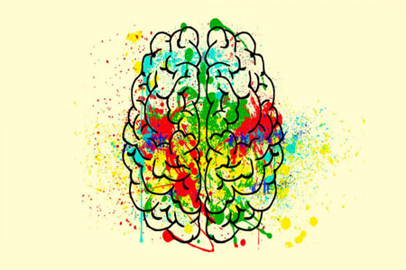

Nos enfocamos a la atención psicoterapeutica a individuos, psicologia infanto juvenil y dificultades de aprendizaje.
Objetivos
° Afrontar y resolver problemas
° Ayudar a fomentar estilos de comunicación funcionales
° Crear espacios de crecimiento personal
° Evaluar, diagnosticar y tratar problemas cognitivos, conductuales y/o emocionales que surgen por un daño cerebral o un funcionamiento anomalo.
° Ofrecer tratamiento psicologico y neuropsicologico apoyados con tecnologia de alta calidad.
° Brindar las mejores estrategias para sentirse mejor consigo mismos, con sus familias, en el colegio o con sus iguales.
La resilencia es la capacidad que tenemos las personas para superar los problemas o las circunstancias traumáticas. Algunos de los problemas sobre los que la terapia psicológica puede ayudar a tu hijo son:
° Problemas familiares
° Problemas escolares
° Bullying
° Problemas de salud
.

Psicoterapía Infantil
La terapia infantil o psicoterapia infantil es un tipo de intervención terapéutica que tiene como finalidad principal potenciar el bienestar emocional y social del niño, y se diferencia de la terapia de adultos no tanto en el objetivo de las intervenciones sino en la manera de llevar a cabo la relación y el proceso terapéutico.
Los beneficios de la intervención psicológica infantil son múltiples, y muchos de ellos son conseguidos con técnicas como la terapia basada en el juego, en la que el terapeuta crea un un entorno protegido y estructurado (el terapeuta actúa como guía) con juegos y juguetes, para poder observar la conducta del niño e indagar en sus eventos internos como pensamientos, sensaciones y emociones.
Realidad Virtual(Psius)
La plataforma Psious dispone de más de 70 entornos y escenas virtuales especialmente diseñados para realizar fácilmente tratamientos y terapias de realidad virtual. Gracias a ells el terapeuta puede utilizar múltiples técnicas terapéuticas (psicoeducación, exposición gradual, desensibilización sistemática, relajación, distracción, aceptación y compromiso, mindfulness, EMDR…) para trabajar con sus pacientes.
Permite tratar todo tipo de trastornos como ansiedad (fobias, pànico, agorafobía, ansiedad generalizada, TOC, ansiedad social, hablar en público, exámenes,etc.), trastornos atencionales y de alimentación, o gestión del dolor, entre otros.
Neurofeedback
El neurofeedback es un tipo de técnica avanzada que de forma gradual entrena al cerebro para autorregularse y mejora así determinados problemas psicológicos como la ansiedad, el estrés o el insomnio. Además, permite en muchos casos potenciar el rendimiento de nuestros procesos cognitivos para mejorar la atención, la memoria y el aprendizaje.
¿Qué es NeuronUP?
NeuronUP es una plataforma web digital diseñada para actuar como un soporte clave para terapeutas ocupacionales y profesionales involucrados en procesos de estimulación y rehabilitación cognitiva . Consiste en numerosos materiales y recursos para diseñar sesiones de tratamiento, además de un administrador de pacientes para organizar y guardar los resultados de esas sesiones.
Está alojado en un sistema de computación en la nube, en otras palabras, un sitio web al que los profesionales pueden acceder en cualquier momento y en cualquier lugar para revisar los resultados de sus pacientes, planificar sesiones de tratamiento, verificar ejercicios, etc. Del mismo modo, el flujo constante de material nuevo y actualizaciones de la plataforma estan disponibles en tiempo real.